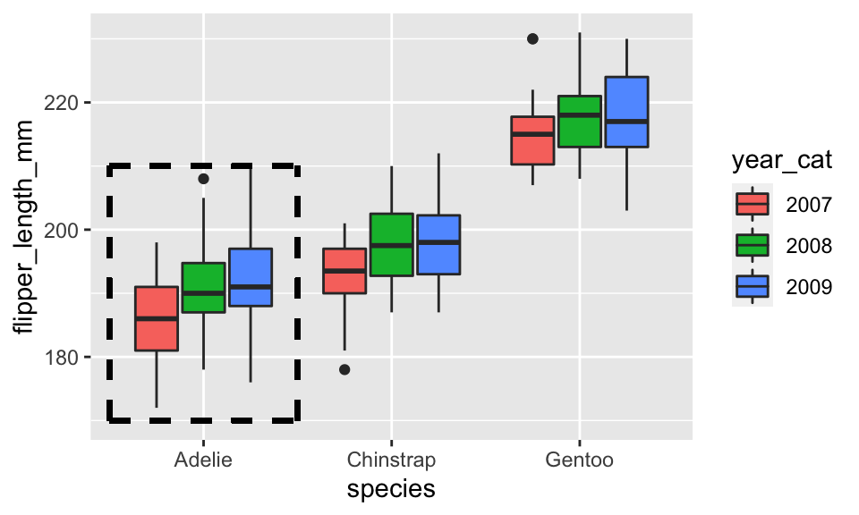
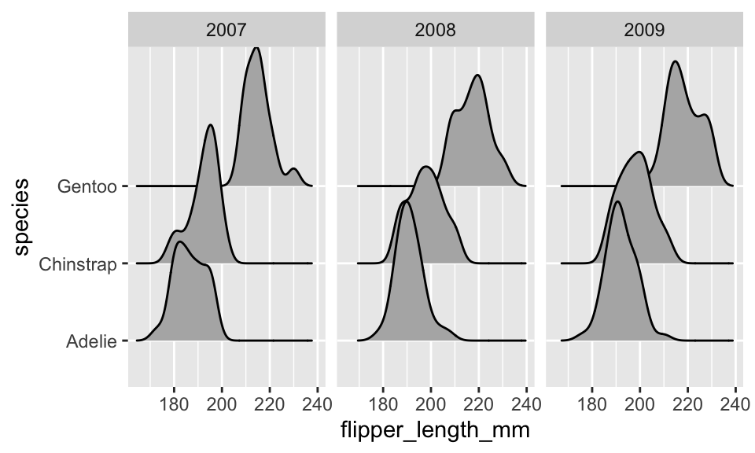
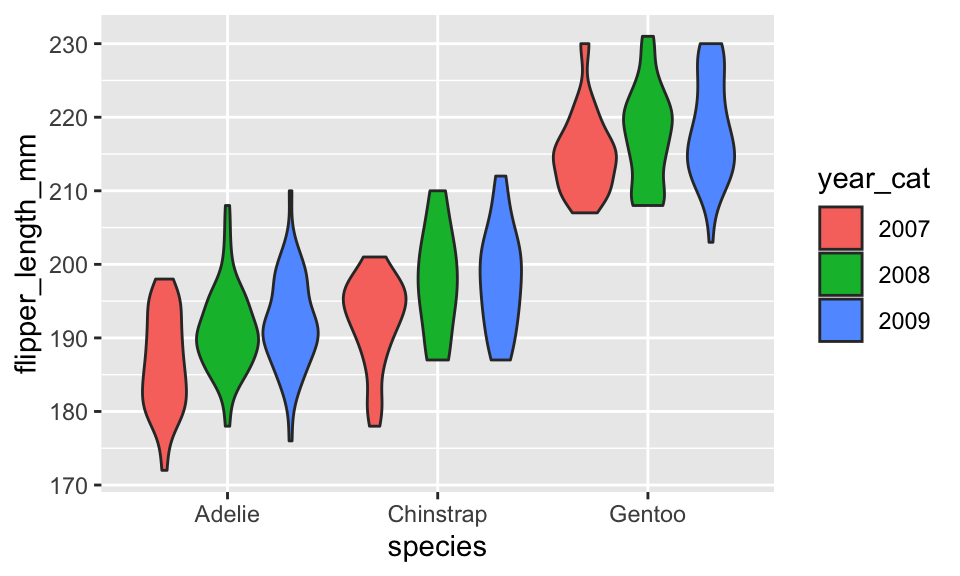

A two-way ANOVA extends the one-way ANOVA to situations with two categorical explanatory variables. This new methods allows researchers to simultaneously study two variables that might explain variability in the responses and explore whether the impacts of one explanatory variable change depending on the level of the other explanatory variable.
In a clinical trials context, it is well known that certain factors can change the performance of certain drugs. For example, different dosages of a drug might have different benefits or side-effects on men, versus women or children or even for different age groups in adults. When the impact of one factor on the response changes depending on the level of another factor, we say that the two explanatory variables interact.
It is also possible for both factors to be related to differences in the mean responses and not interact. For example, suppose there is a difference in the response variable means between young and old subjects and a difference in the responses among various dosages, but the effect of increasing the dosage is the same for both young and old subjects. This is an example of what is called an additive type of model.
In general, the world is more complicated than the single factor models we’ve considered, especially in observational studies, so these models allow us to start to handle more realistic situations.
The visualizations we created for a one-way ANOVA are still relevant here, but we need to figure out how to add a second categorical explanatory variable to our plots.
Similar to the multivariate plots we’ve talked about previously, there are two main ways to add a second categorical variable to our plots:
We’ll explore both below!
Below is a plot of the relationship between flipper length and species for penguins in the Palmer Archipelago.
The year the data were collected was modified to a categorical variable, year_cat. Change to code below to fill the violins with the year_cat variable.
penguins %>%
ggplot(aes(x = species, y = flipper_length_mm)) +
geom_violin()Hint: Add an aesthetics to either ggplot() or geom_violin() and specify that the violins should be filled with year_cat.
penguins %>%
ggplot(aes(x = species, y = flipper_length_mm)) +
geom_violin(aes(fill = year_cat))Now, take the same plot and instead of coloring by year_cat use facets to separate the different sampling years.
penguins %>%
ggplot(aes(x = species, y = flipper_length_mm)) +
geom_violin() +
facet_wrap()Hint: Add ~year_cat or vars(year_cat) to facet_wrap() to create year facets.
penguins %>%
ggplot(aes(x = species, y = flipper_length_mm)) +
geom_violin() +
facet_wrap(~year_cat)You’ll notice that the labels for the species are running together, so let’s swap the position of our axes.
penguins %>%
ggplot(aes(y = species, x = flipper_length_mm)) +
geom_violin() +
facet_wrap(~year_cat)
As was mentioned in the Introduction, there are two different types of two-way ANOVA models. Similar to a multiple linear regression, the two explanatory variables could have their own impact on the response (similar to parallel slopes). Or, the relationship between one explanatory variable and the response could differ based on another explanatory variable (similar to different slopes).
These two types of models are called an additive two-way ANOVA model or an interaction two-way ANOVA model. Similar to how we decided which model to choose in a multiple linear regression, we will use visualizations to guide us.
When deciding if an interaction model is a good fit for the data, we look to see if the relationship between one categorical variable and the response differs based on the level of the other response variable.
Here, we look at the relationship between year and flipper_length_mm and see if it differs based on the species of the penguins. I think of looking at the shape of the relationships in the outlined box, and comparing these relationships with what is seen in the other species.
The other way you can think of this is to draw a line through the center of the Adelie violins, then look to see if you believe that the slope of this line differs based on the species of the penguin.

Does it appear that the relationship between year and flipper length differs based on the species of the penguin? I didn’t think so, but we will see in a bit whether we (I) made the “right” choice.
The two-way ANOVA model has the same conditions as its one-way counterpart, however, we now have extra groups to think about.
Independence
For both categorical variables:
- observations across groups need to be independent - observations within each group need to be independent
Equal Variance: the variability of each group is similar to the others.
Note: this is an assumption about the groups at the intersection of each categorical variable (e.g. Gentoo penguins captured in 2007). This assumption is fairly robust, but large differences in variability will cause issues.
Normal Distribution: the responses of each group need to be approximately Normal.
Note: this is an assumption about the groups at the intersection of each categorical variable (e.g. Gentoo penguins captured in 2007). This assumption is also fairly robust, but influential outliers and the sample sizes of the groups should be noted when assessing.
Your turn!

The R code to fit a two-way ANOVA model is very similar to a one-way ANOVA model. We use the aov() (analysis of variance) function, but now we will have two categorical explanatory variables.
First, we’ll fit an interaction two-way ANOVA model to see if the relationship between year and flipper length differs based on species of penguins.
species:year_cat is the interaction between these two variables.aov(flipper_length_mm ~ species + year_cat + species:year_cat, data = penguins) %>%
tidy()We notice that the interaction line (species:year_cat) has a small F-statistic (0.551) and a large p-value (0.698). This would lead for us to conclude that there is not an interaction between these two variables, or that the relationship between year and flipper length does not differ based on penguin species.
An additive model seems like a better choice. Modify the code from the interaction model to fit an additive model instead.
aov(flipper_length_mm ~ species + year_cat + species:year_cat, data = penguins) %>%
tidy()Hint: Remove the interaction term to fit an additive model!
aov(flipper_length_mm ~ species + year_cat, data = penguins) %>%
tidy()Based on the ANOVA table above, what would you conclude for the relationship between flipper length and species and the relationship between flipper length and sampling year?
In this context, the ANOVA table allows for use to test two hypotheses:
Again, similar to a multiple regression, the interpretation of these tests is conditional on the other variable in the model.
Based on the ANOVA table below, we would conclude that, after accounting for the year of capture, at least one species has a different mean flipper length.